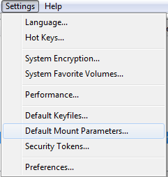
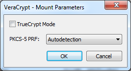

Starting from version 1.0f-2, it is possible to specify the PRF algorithm and the TrueCrypt mode that will be selected by default in the password dialog.
As show below, select the entry "Default Mount Parameters" under the menu "Settings":

The following dialog will be displayed:

Make your modifications and then click OK.
The chosen values are then written to VeraCrypt main configuration file (Configuration.xml) making them persistent.
All subsequent password request dialogs will use the default values chosen previously. For example, if in the Default Mount Parameters dialog you check TrueCrypt Mode and you select SHA-512 as a PRF, then subsequent password dialogs will look like:

Note: The default mount parameters can be overridden by the Command Line switches /tc and /hash which always take precedence.